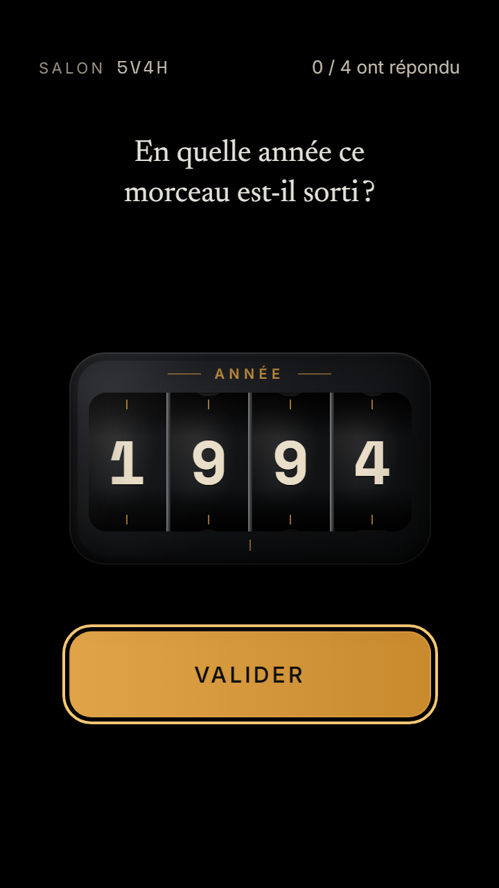
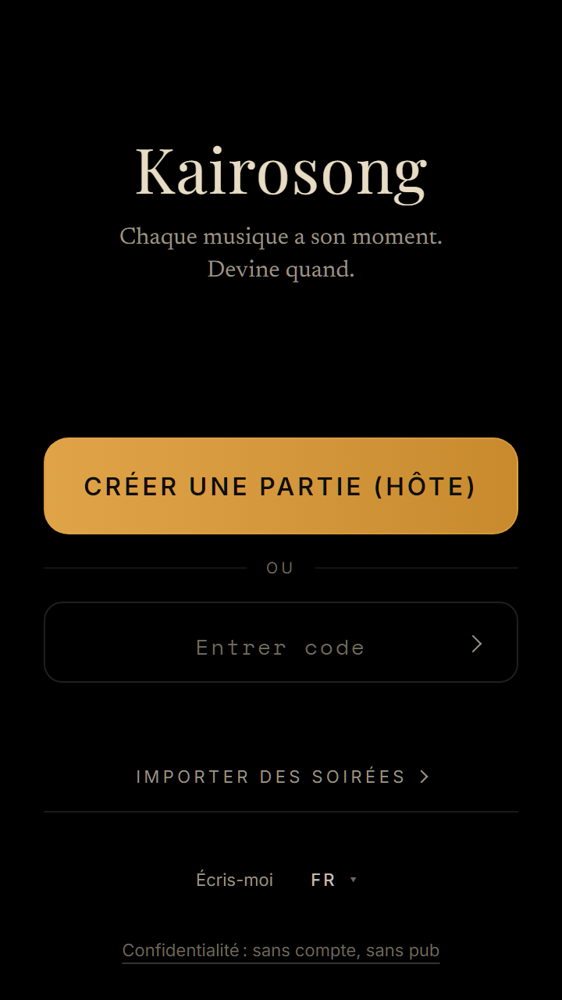
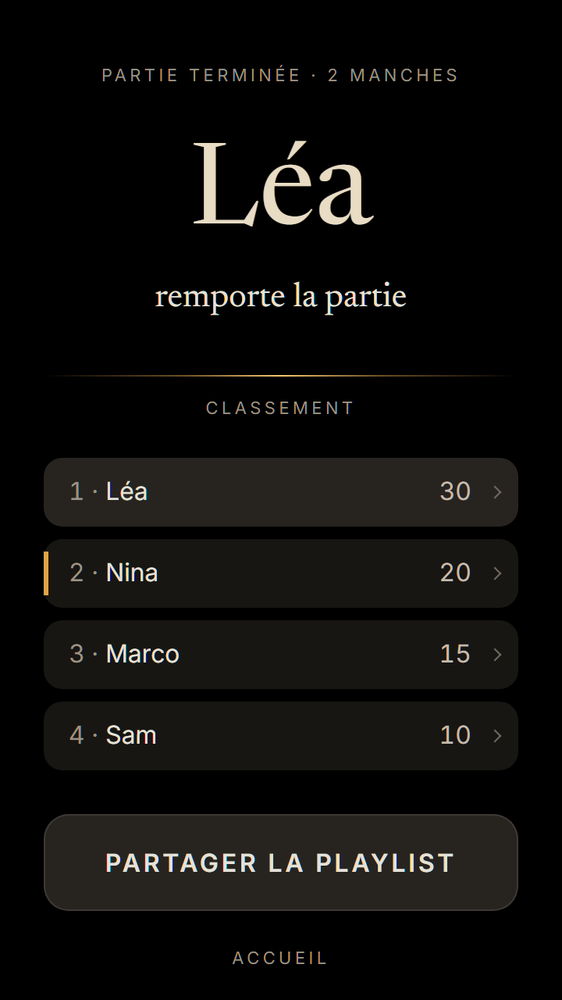

Kairosong
Kairosong
Chaque musique a son moment.
Devine quand.
Le jeu de soirée qui écoute ta musique. Un quiz musical, un blind test, une soirée — où la seule question est l’année.
À la maison, en soirée, au bar.
Gratuit. Sans compte, rien à installer.
Comment ça marche
Trois temps
Ta musique
Ce qui passe dans la pièce : ta playlist à la maison, la sono d’un bar, un vinyle en soirée.
Kairosong écoute
Quelques secondes lui suffisent pour reconnaître le morceau.
Chacun devine
Chaque joueur choisit l’année sur son téléphone. Puis la réponse tombe.
Quand tout le monde a répondu, l’écart place l’année de chacun sur la même règle — puis l’hôte révèle.

Ce qu’il faut
De quoi jouer la musique, et un téléphone chacun
De quoi jouer la musique
Une enceinte, une platine, une radio, une télé… toute source que la pièce entend — ou un bar qui la joue déjà.
Un téléphone par joueur
L’hôte affiche un QR code, chacun le scanne, et c’est parti.
Pas de compte. Pas de store. Rien à installer.
Les règles
Devine l’année, marque l’écart
- L’année juste15pts
- À 2 ans près10pts
- À 5 ans près5pts
- À 10 ans près2pts
Les petites lignes
- Un live, un remaster, une réédition : même chanson, même année. Un Billie Jean live de 1988, c’est toujours 1982.
- La reprise de quelqu’un d’autre, ou un remix : cette version a sa propre année.
- Seules les vraies sorties comptent — pas le disque promo envoyé aux radios des mois avant.
- La révélation dit toujours quelle version passait.
- Morceau pas reconnu ? L’hôte relance l’écoute ou le passe. Personne ne perd de points.
Écrans
Du salon au dernier morceau

L’écran d’accueil Le salon, avec son QR code Après la révélation, l’histoire du morceau 
Le bilan de la soirée
Le mot
Kairos — en grec ancien, le moment juste, celui qui compte.
Une chanson peut en garder un : un été, une première danse, une année qu’on n’oublie pas.
Kairosong fait de ce qui passe un jeu sur le temps.
Questions
Avant de lancer la musique
Kairosong joue-t-il la musique ?
Non. Il écoute ce qui passe déjà — ton enceinte, la sono d’un bar, la radio. Quelques secondes partent au service de reconnaissance, puis l’extrait est jeté.
Faut-il Spotify ?
Non. Toute source marche : une appli de streaming, un vinyle, un CD, la radio. Si la pièce l’entend, Kairosong aussi.
C’est gratuit ?
Oui, entièrement. Pas de pub, pas d’abonnement, pas de compte.
Ça marche sur iPhone ?
Oui, dans Safari — pour l’hôte comme pour chaque joueur. Une exception : le mode DJ sur un seul téléphone, qui joue et écoute sur le même appareil, demande Android.
Combien de joueurs ?
Autant de téléphones que tu veux — à 2, ça marche ; à 10, c’est la fête.
Et mes données ?
Pas de compte, pas d’e-mail : ton pseudo est éphémère et disparaît avec la partie. Tout le reste est sur la page confidentialité.
Prêt quand la musique l’est.
Jouer